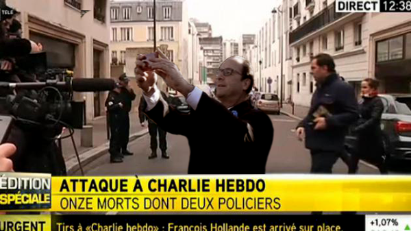

A partir du , Charlie Hebdo s'installe 10 rie Nicolas Appert, dans le 11ème
arrondissement de Paris. A partir de , la surveillance permanente de Charlie est
interrompue : seul Charb reste protégé par un policier, et quelques rondes régulières sont faites devant le
journal Jaussent, Violaine: "Quel était le dispositif de sécurité mis en place autour de "Charlie Hebdo ?", France TV Info, 2015-01-07.
Le , à , Chérif Kouachi depuis son domicile de Gennevilliers (Hauts-de-Seine)
envoie un SMS à l'une des 13 lignes téléphoniques entre lesquelles jongle Amedy Coulibaly depuis quelque mois
Cazi, Emeline & Vincent, Elise: "Une
heure avant « Charlie », le dernier SMS", Le Monde, 2015-02-17. Peu avant
, une Citroën C3 conduite par un 3ème homme dépose 2 hommes vêtus de noir, cagoulés, porteurs
d'une kalachnikov et d'un lance-roquette, devant le n°
6 rue Nicolas Appert. Ils s'aperçoivent qu'il
ne s'agit pas de la rédaction de Charlie Hebdo. Ils demandent autour d'eux où se trouve Charlie
Hebdo, puis se dirigent alors devant le siège de l'hebdomadaire, au n° 10.
La dessinatrice Coco est devant la porte du journal :
J’allais chercher ma fille à la garderie, devant la porte de l’immeuble du journal 2 hommes cagoulés et armés
m'ont brutalement menacées. Ils voulaient entrer, monter. J’ai tapé le code. Mauriaucourt, Laurence: "Charlie
Hebdo : Le témoignage de la dessinatrice Coco", L'Humanité 2015-01-07
Un journaliste de Premières Lignes, une société de production tv située
dans le même immeuble que Charlie, descendu fumer une cigarette, aperçoit les hommes armés de kalachnikov cherchant
Charlie et remonte en vitesse prévenir ses collègues, criant : kalach ! kalach ! kalach !. Ils ferment la
porte, et mettent devant ce qu'ils peuvent pour se barricader
""Charlie
Hebdo" : ils ont vécu l'attaque, ils racontent", Le Nouvel Observateur, 2015-01-07.
Massacre
Les 2 hommes pénètrent dans le bâtiment et tirent en criant toujours qu'ils cherchent Charlie Hebdo. Ils
tirent sur les 2 hommes dans le hall d'entrée et tuent l'un d'eux, Frédéric Boisseau (agent d'entretien pour
Sodexo C'est la première fois qu'il avait rendez-vous là-bas, dira son épouse, il ne
savait même pas qu'il y avait Charlie Hebdo. Il était au mauvais endroit au mauvais moment. J'ai la tête haute
parce que Frédéric est un homme bien. On va faire ce qu'il aurait fait et rester
digne. RTL, vendredi).
Coco se souvient :
ça a duré … Je m’étais réfugiée sous un bureau… Ils parlaient parfaitement le français… Se
revendiquaient d’Al Qaïda.
Images filmées par l'agence Premières LignesFrance TV info
Les journalistes de Premières Lignes qui ont essayé d'appeler la police sans succès, entendant les coups
de feu se rapprocher, sont finalement partis se réfugier sur le toit. De là, ils passent sur l'immeuble voisin, se
cachent derrière des cheminées, et voient le chauffeur du trio tirer sur la facade.
A ce moment, une quinzaine de personnes assistent à la conférence de rédaction de l'hebdomadaire. Philippe Lançon
enfile son manteau, son bonnet et son sac à dos. Luce Lapin, la secrétaire de rédaction, s’apprête à quitter la
salle pour corriger un numéro spécial sur la gestation pour autrui. Elle a déjà un pied dans son bureau, accolé à
celui de Mustapha Ourrad (correcteur du journal d’origine kabyle qui, après des décennies de présence sur le territoire, vient d’obtenir la nationalité française).
Leurs bureaux sont séparés de la salle de rédaction par une simple porte vitrée. Ils entendent deux “pop”. Ça a
fait “pop pop”. Les 2 balles ont perforé les poumons de Simon Fieschi (31 ans, le webmaster chargé de gérer
le tombereau d’insultes qui affluent à la rédaction depuis des années). Son bureau est le 1er qu’on rencontre
quand on pénètre dans les locaux
Grièvement blessé, il sera hospitalisé dans un état critique.
Dans la salle de rédaction, un moment de flottement. Luce a demandé si c’était des pétards. On s’est tous
demandé ce que c’était. Elle voit Franck Brinsolaro (49 ans, le policier chargé de la protection de Charb), se
lever de son bureau, logé dans un renfoncement de la pièce. Sa main semblait chercher quelque chose sur sa
hanche, peut-être son arme. Il a dit : Ne bougez pas de façon anarchique. Il a semblé hésiter près de la
porte. Je me suis jetée au sol. “Pop pop” dans Charlie, je comprends que ce ne sont pas des pétards. se
souvient Sigolène Vinson (chroniqueuse judiciaire à l'hebdomadaire). La jeune femme rampe sur le parquet en
direction du bureau de Luce et Mustapha, à l’autre bout de la pièce. Elle entend la porte d’entrée de la salle de
rédaction "sauter" et un homme crier Allahou akbar. Puis cette question : Où est Charb ?. Pendant
que je rampe au sol, j’entends des coups de feu. Je ne veux pas me retourner pour ne pas voir la mort en face.
Je suis sûre que je vais mourir. Je rampe et j’ai mal au dos. Comme si on me tirait dans le dos. Aucun tir
ne la touche cependant.
Tandis que les balles sifflent dans la pièce, elle parvient à atteindre le bureau de Mustapha et Luce, puis se
cache un peu plus loin derrière le muret qui marque la séparation avec celui des maquettistes. Laurent Léger
(grand reporter pour Charlie Hebdo), son voisin de table, est parvenu à se glisser sous le bureau du
policier. Adossée au muret, la jeune femme aperçoit Jean-Luc, le maquettiste, qui s’est lui aussi réfugié sous son
bureau. Elle entend la scène qu’elle ne voit pas : Ce n’était pas des rafales. Ils tiraient balle après balle.
Lentement. Personne n’a crié. Tout le monde a dû être pris de stupeur. Puis tout s’est tu. Je connaissais
l’expression “un silence de mort”…, dit-elle. Le silence, et cette odeur de poudre. Vinson ne voit
rien. Réfugiée derrière le muret, elle entend la mort, elle la sent. Puis elle perçoit des pas qui s’approchent.
Des coups de feu, à nouveau. Je comprends que c’est Mustapha. Puis elle voit. J’ai vu les pieds de
Mustapha au sol.
Face-à-face
Les pas se rapprochent. Un des tireurs, habillé comme un type du GIGN, contourne lentement le muret et
la met en joue. Il porte une cagoule noire. Je l’ai regardé. Il avait de grands yeux noirs, un regard très
doux. J’ai senti un moment de trouble chez lui, comme s’il cherchait mon nom. Mon cerveau fonctionnait très
bien, je pensais vite. J’ai compris qu’il n’avait pas vu Jean-Luc, sous son bureau. L’homme qu’elle
regarde dans les yeux s’appelle Saïd Kouachi. Il lui dit : N’aie pas peur. Calme-toi. Je ne te tuerai pas. Tu
es une femme. On ne tue pas les femmes. Mais réfléchis à ce que tu fais. Ce que tu fais est mal. Je t’épargne,
et puisque je t’épargne, tu liras le Coran. Elle se souvient de chaque mot. Jean-Luc est sous la table,
il ne l’a pas vu.
Les yeux plantés dans le regard du tueur, Vinson engage un dialogue mental avec lui. Ses pensées courent toutes
seules. Je me suis demandé pourquoi il me disait ça. Je pensais que mes chroniques judiciaires étaient
jolies. Je trouvais assez cruel de sa part de me demander de ne pas avoir peur. Il venait de tuer tout le
monde et me braquait avec son arme. Je l’ai trouvé injuste. Injuste de dire que ce qu’on faisait était mal,
alors que le bien était de notre côté. C’est lui qui se trompait. Il n’avait pas le droit de dire ça.
Durant cet échange silencieux, elle ne quitte pas son agresseur du regard. Je lui fais un signe de la tête.
Pour garder un lien, un contact. Peut-être qu’inconsciemment, je cherche à l’attendrir. Je ne veux pas perdre
son regard car Jean-Luc est sous la table, il ne l’a pas vu, et j’ai bien compris que s’il ne tue pas les
femmes, c’est qu’il tue les hommes. Dans la salle de rédaction, où se trouve Chérif Kouachi, le frère
cadet de Saïd, une femme a pourtant été assassinée : Elsa Cayat (psychanalyste et chroniqueuse à Charlie). Saïd
Kouachi se tourne vers la grande pièce et crie : On ne tue pas les femmes ! 3 fois. A ce moment, je ne
sais pas qu’Elsa est morte, dit Vinson. Ni que Cécile, Luce et Coco se sont réfugiées dans un autre
bureau.On ne tue pas les femmes !, crie Saïd. Puis il disparaît.
A un moment, elle ne sait plus trop quand, elle s’approche de la fenêtre pour sauter, avant de se rendre compte
que c’est trop haut. Je me suis retrouvée avec Jean-Luc, on est resté interdits. On ne savait pas s’ils
étaient vraiment partis. Des coups de feu retentissent au loin, dans la rue. J’ai entendu Lila [le petit
cocker roux du journal], les petits pas de Lila, passer à côté de Mustapha. Dans son souvenir, la mémoire de
ses sens exacerbés, le chien courait de bureau en bureau pendant la tuerie. Au fond de la pièce, une main se lève.
Vinson retourne dans la salle de rédaction. Sa vision d’horreur. Je vois les corps par terre. Tout de
suite, j’aperçois Philippe, le bas du visage arraché, qui me fait signe de la main. Il y a 2 corps sur lui.
C’était trop. Elle s’interrompt. Puis reprend, la voix étranglée : Il a essayé de me parler avec la joue
droite arrachée… Je lui ai dit de ne pas parler. Je n’ai pas pu m’approcher de lui. Je n’ai pas pu lui tenir la
main. Je n’ai pas réussi à l’aider. C’était trop. Lançon, dont les jours ne sont pas en danger, a reçu une
balle dans la joue droite. Tous les morts ont été retrouvés face contre terre. Vinson enjambe les corps de Cabu,
d’Elsa, de Wolinski et de Franck, le policier, pour récupérer son portable dans son manteau. Elle appelle les
pompiers. La conversation dure . C’est Charlie, venez vite, ils sont tous morts. Le
pompier lui demande Combien de corps ?. Elle s’agace, le trouve con. Le pompier lui demande
l’adresse de Charlie Hebdo. Elle ne s’en souvient plus. Elle répète 3 fois : Ils sont tous morts !
» Au fond de la pièce, une main se lève. Non, moi je ne suis pas mort. C’est Riss. Allongé sur le dos, il
est touché à l’épaule. A côté de lui, Fabrice Nicolino fait signe à Vinson de venir l’aider. Atteint aux jambes et
à l’abdomen, il est assis dans une mare de sang. C’est horrible à dire, mais comme ses blessures étaient moins
apparentes que celles de Philippe, c’était plus facile pour moi de m’occuper de lui. Il m’a demandé quelque
chose de frais pour son visage, je lui ai rapporté un torchon mouillé. Puis il m’a demandé de l’eau. Je ne
savais pas qu’il ne fallait pas donner d’eau dans ces circonstances, je suis allée remplir une flûte à champagne
en plastique dans la cuisine. Il perdait beaucoup de sang. Puis il s’est senti partir, il m’a demandé de lui
parler.
Ses proches, informés du drame, commencent à l'appeler. Dès que je décrochais, je hurlais, je tenais des
propos incohérents. Riss m’a demandé de me calmer. Dès que je raccrochais, je me calmais, je retrouvais mes
esprits. Coco fait irruption dans la pièce. Elle se précipite sur Lançon pour lui venir en aide. Ça m’a
soulagée, dit Vinson, moi je n’y arrivais pas. Chaque seconde semble une éternité. L’attente de
l’arrivée des secours, qui tarde, est insupportable. Tout à coup a surgi dans la salle une femme habillée de
noir, assez jolie. J’ai appris plus tard qu’elle travaillait en face, sur le même palier. Elle avait les yeux
exorbités. Elle disait : C’est horrible, c’est horrible. Elle avait la main sur la bouche. Elle voulait
aider, mais elle ne pouvait pas.
La silhouette de Patrick Pelloux apparaît dans l’embrasure de la porte. Je l’ai vu se pencher sur le corps de
Charb. Il lui a pris le pouls au niveau du cou. Puis il lui a caressé la tête et lui a dit : Mon frère.
La jeune femme se souvient qu’on lui fait alors quitter la pièce. On l’emmène dans "l’aquarium", le grand bureau
vitré où travaillent d’ordinaire Zineb, Léger et Gérard Biard (rédacteur-en-chef, qui a survécu). Je vois Luz,
je ne comprends pas ce qu’il fait là car il n’était pas à la conférence de rédaction. Je suis ahurie. Puis je
vois Laurent Léger, je ne comprends pas non plus car lui y était. Je suis tellement contente. Des pompiers
arrivent, puis Riss. Je m’aperçois qu’il y a Cécile, Coco et Luce. C’est là que je me rends compte qu’il y a des
vivants. Que toutes les femmes, en dehors d’Elsa, sont vivantes. Arrivé en retard à la conférence de
rédaction, Luz avait apporté une galette des rois. Le gâteau marbré de Vinson, lui, a volé en éclats. Lila,
le cocker roux, a continué de courir de table en table. La jeune femme cherche ses mots. Le sens se dérobe. Cette
rédaction, ce n’était que des rires et de la gentillesse. Une vraie douceur, une vraie tendresse. Quand j’ai vu
Cabu et Wolinski, des vrais, vrais gentils, je n’ai pas compris…Seelow, Soren: "«
C’est Charlie, venez vite, ils sont tous morts »", Le Monde, 2015-01-13
En tout, sont morts Stéphanne Charbonnier dit Charb (dessinateur), Brinsolaro, Jean Cabut dit
Cabu (dessinateur), Georges Wolinski (dessinateur), Bernard Velrhac dit Tignous (dessinateur),
Philippe Honoré (dessinateur), Bernard Maris (économiste), Elsa Cayat (psychiâtre et psychanalyste), Ourrad, Michel
Renaud (invité de la rédaction).
A I-télé est le 1er média à tweeter l'information depuis ses locaux.
Les bureaux de Charlie Hebdo, après la tuerie DR
Léger prévient un ami proche à : Appelle la police. C'est un carnage. Tout le monde est
mort. Puis la communication est coupée.
La journaliste Catherine Meurisse arrive en retard à la conférence de rédaction. Dans la rue, elle voit surgir 2
hommes encagoulés de l'immeuble. Leur complice est reparti à scotter.
, 20 minutes annonce aussi la nouvelle sur Twitter.
Fusillades
A la sortie de l'immeuble, une série de 3 fusillades éclate avec des policiers :
Les attaquants de Charlie, sortis de leur voiture pour tirer sur une voiture de police
rencontrée à contresens
dans l'Allée Verte, perpendiculaire à la rue Nicolas Appert, Les assaillants se retrouvent face à une voiture de
police. Ils sortent et tirent dessus, atteignant le pare-brise, mais ne faisant pas de blessés. La voiture de
police recule.
boulevard Richard Lenoir, direction sud, avec une brigade policière en VTT, sans que personne ne soit touché.
toujours boulevard Richard-Lenoir,
direction nord après avoir tourné rue du Chemin Vert, :
Les assassins de l'équipe de Charlie, sortant de leur voiture (aux rétroviseurs chromés
éclairés) pour achever le policier Ahmed Merabet
Sur la droite, j’ai vu une voiture de couleur sombre arrêtée en plein milieu de la rue. 2 hommes vêtus de
noir en sont sortis, avec des cagoules, armés de fusils noirs. Un policier a tiré dans leur direction. Les 2
hommes tiraient aussi. Le policier a été touché et est tombé en poussant un cri. Il a tenté de s’enfuir mais
est tombé face contre terre. Les agresseurs ont couru vers lui. L’un est arrivé à sa hauteur et lui a tiré
une balle dans la tête. Puis ils sont remontés dans la voiture.
les 2 hommes ont couru en direction du policier tombé au sol, sans doute touché par un tir. Tu veux nous
tuer ? demande l’un des tireurs. – Nan, c’est bon chef, répond le policier à terre. L’homme cagoulé
est passé devant lui et lui a tiré dessus, au fusil d’assaut, sans même freiner sa course. Ahmed Merabet (42
ans, gardien de la paix au commissariat du 11e arrondissement), mourra de ses blessures. En retournant dans
leur voiture, un des hommes crie : On a vengé le prophète Mohamed ! On a
tué Charlie Hebdo !
Ils prennent alors la fuite vers le nord-est de Paris. Place du Colonel-Fabien, ils
percutent violemment la conductrice d’un Touran Volkswagen.
A République (Paris), le journaliste Marc Beauge aperçoit le véhicule des terroristes,
vitres cassées, pourchassé par des voitures de police.
La Carte d'Identité de Said Kouachi, laissée dans la voiture abandonnée après l'accident dans le 19ème
Rue de Meaux dans le 19ème arrondissement, ils
s'encastrent dans des poteaux au niveau de la et abandonnent alors la voiture, oubliant à bord une carte d’identité
(qui mènera à leur identification) ainsi qu'un drapeau di jihad islamique utilisé par EI
comme par AQPA, 10 cocktails molotovs, dont 1 avec une
empreinte de Chérif Kouachi, un pare-soleil marqué "police" et des chargeurs pour kalachnikov.
Ils braquent alors le conducteur d’une Clio, et reprennent leur fuite dans sa voiture, après lui avoir dit : Vous
direz aux médias que c'est de la part d'Al-Qaïda au Yémen.
Les policiers perdent leur trace porte de Pantin. Un appel à témoin est lancé, avec un
numéro vert (08.05.02.17.17) a mis à disposition et activé afin de recueillir tout témoignage sur cet
attentat.
Le président François Hollande se rend immédiatement sur les lieux de l'attentat puis annonce une journée de deuil
national pour le .
Le plan Vigipirate est relevé au niveau le plus élevé, "alerte attentat", en Ile-de-France. Perquisitions à
Strasbourg, en région parisienne, à Reims et Charleville-Mézières (Ardennes) et premières gardes à vue. La police
recherche Chérif et Saïd Kouachi, 32 et 34 ans, nés à Paris de parents algériens. Le premier est un djihadiste
condamné en .
Réactions dans le monde
Le slogan "Je suis Charlie", via le hashtag #jesuisCharlie, se répand sur les réseaux sociaux et dans les rues.
Dans la soirée, plus de 100000 personnes manifestent en France et d'autres rassemblements spontanés se tiennent
dans plusieurs villes européennes mais également à New York, Washington et au Canada.
En Tunisie :
Suite à l'ignoble attentat terroriste au cours duquel 12 citoyens français ont trouvé la mort, le gouvernement
tunisien, présente en ce mercredi 7 janvier 2015, ses plus sincères condoléances au gouvernement français et aux
familles des victimes et souhaite un prompt rétablissement aux blessés.
En ces douloureuses circonstances le gouvernement tunisien exprime sa ferme condamnation de cet acte terrorisme
lâche et formule sa solidarité avec le peuple français.
Avec les premières informations émergent les premières théories de complot sur l'événement. On trouve que :
les rues sont trop désertes : à du matin dans ce quartier c'est tout à fait
habituel.
les journalistes qui sembleraient au courant avant l'événement :
soit suite à des annonces préalables dans les media : ce qui est faux, voir plus bas
soit parce qu'un journaliste de Premières Lignes qui se filmera lors de l'attentat montrera un d'entre eux
portant un gilet pare-balles : or toutes les rédactions de reporters possèdent dans leurs locaux ce type
d'équipement, enfilé après que les terroristes aient été observés et que les journalistes se soient
barricadés dans leurs locaux en face des bureaux de Charlie.
les rétroviseurs de la voiture changent de couleur selon les photos : il ne change pas de couleur mais reflète
plus ou moins le soleil suivant son orientation.
Hollande bashing visant à étayer que le gouvernement aurait été au courant:
Montage de Hollande qui prendrait un selfie devant les lieux de l'attentat, élaboré à partir
d'une photo prise lors d'une cérémonie du

un montage d'une autre photo de Hollande faisant un selfie, plaqué sur le décor des locaux de Charlie.
Hollande se rendant sur les lieux de l'attentat seulement après avoir l'attentat : il a en
fait été prévenu par Patrick Pelloux, un des premiers arrivés sur les lieux (voir plus bas), et a pu faire
le trajet en voiture depuis l'Elysée via un cortège qui n'a pas eu à s'arrêter aux feux rouges.
Suite à ces premières théories toutes réfutées, le site satirique belge publie un article canular prétendant que
le dernier roman de Michel Houellebecq avait prévu l'événement Kagan, Marie: "L’étrange
passage prémonitoire du livre « Soumission » de Michel Houellebecq", Nord Presse, 2015-01-07.
Le canular fonctionne bien, jusqu'à être vérifié et invalidé. Interrogé le site reconnaît : On a fait ça pour
se moquer de tous les idiots complotistes qui démarrent leurs idioties
Par la suite, un faux site de la BBC www.bbc-news.co.uk au lieu de bbc.co.uk/news
sera même monté pour y publier un article relayant ces théories
Untersinger, Martin: "Une
fausse page de la BBC sur la tuerie de "Charlie Hebdo"", Le Monde, 2015-01-12.
La liste des personnes recherchées par la police en fin de journée, dont Mourad Hamyd qui sera mis hors
de cause
En fin de journée, le journaliste controversé Jean-Paul Ney publie sur Twitter les noms des suspects recherchés par
la police, dont Mourad Hamyd, qui sera par la suite mis hors de cause.
Dans la nuit, Mourad Hamyd, présenté comme le plus jeune complice, se présente volontairement au commissariat de
police de Charleville-Mézières, pour s’expliquer. Cependant, il sera avéré que le jeune homme était en cours.
Mis hors de cause, le lycéen a toutefois été placé en garde à vue pendant 48 h car il est le beau-frère de Cherif
Kouachi
M.P. avec AFP: "Attaque
de «Charlie Hebdo»: Mourad Hamyd, présenté à tort comme le 3e homme, «sous le choc»", 20 Minutes, 2015-01-11.
Attaque à Montrouge
Le à Montrouge (Hauts-de-Seine), Clarissa Jean-Philippe
(policière municipale stagiaire, 26 ans), un collègue policier (MathisPseudonyme,
41 ans) et Eric Urban (47 ans, agent municipal de voirie) interviennent sur un accident de la circulation.
A un moment, Mathis voit un homme qui fait un pas en arrière, sort un fusil d'assaut, puis tire un
coup de feu. Son co-équipier Eric se retourne et prend directement une balle qui lui blesse le visage, ainsi
que Clarissa Jean-Philippe. Eric est paralysé pendant 1 ou 2 s. Mais on comprend que, si on réagit pas, on va
mourir. Je me suis dit : il ne faut pas que je tombe par terre. Mathis, lui, croit d'abord
l'arme factice, alors je tape dessus, en me disant C'est une blague à la con, mais j'ai vu la tête d'Eric
déformée par la balle et Clarissa qui gémissait.
Le terroriste retourne alors sa Kalachnikov sur le petit groupe. Le seul moyen de survivre, c'est de lui sauter
dessus comme une sangsue, rapporte Mathis. Ca a duré longtemps. J'ai arraché sa
cagoule, j'ai tenté de le frapper. Dans la lutte, Coulibaly laisse échapper une seule phrase : Tu
veux jouer, tu vas crever.
Alors qu'Eric, ensanglanté, a réussi à s'éloigner, Mathis se retrouve à genoux, mais parvient à
saisir d'une main le canon de l'arme du terroriste. Coulibaly tente alors de mettre son autre main dans la poche,
mais l'agent municipal l'en empêche en lui attrapant le bout de la manche. Le tireur le frappe avec le canon du
fusil et sort un pistolet Tokarev avec lequel il tente de tirer.
Pour moi, j'étais mort. Il a fait "clic". Je n'ai pas compris pourquoi j'étais vivant, se souviendra Mathis,
apprenant plus tard que le pistolet du terroriste s'était enrayé, lui laissant la vie sauve. Coulibaly range alors
son gun, sa Kalach, puis repart en footing, se rappelle Mathis.
C.P.-R. & AFP: ""Tu
veux jouer, tu vas crever" : ils racontent leur face-à-face avec Coulibaly", Europe 1, 2015-10-22
Clarissa Jean-Philippe mourra de ses blessures. Le parquet antiterroriste est saisi.
Ce jour-là, un mystérieux correspondant conseille par mail Coulibaly dispose d'une douzaine d'adresses mail, dont la moitié est mutualisée avec ses interlocuteurs afin de discuter via les brouillons, sans jamais envoyer de courriel. Il a également ouvert des comptes sur des serveurs Internet basés partout dans le monde, du Danemark aux Etats-Unis en passant par les Pays-Bas et la Turquie.
à Coulibaly de dormir et de se planquer, d'attendre les indications pour la
suiteTriomphe, Chloé & M.-A.B.: ""Dormir
et se planquer", les instructions reçues par Coulibaly le jour de Charlie", Europe 1, 2014-10-14.
Vaucienne (Aisne), les frères Kouachi braquent la
station-service Avia "Le Relais du Moulin" visage découvert pour voler de l'essence et de la
nourriture. Le gérant braqué les reconnait. Ils étaient armés de kalachnikov et d'un lance-roquette
à l'épaule, selon la vidéosurveillance.
Le Raid et le GIGN se déploient (pour la 1ère fois ensemble) autour de
Villers-Cotterêts, en Picardie placée également sous "alerte attentat". 9 personnes au
total sont en garde à vue. Une vaste zone rurale et boisée à quelque 80 km au nord-est de Paris, à cheval entre
l'Aisne et l'Oise, est passée au peigne fin avec l'aide d'hélicoptères, notamment les villages de
Corcy et Longpont (Aisne).
Les journaux s'habillent de noir, des anonymes déposent fleurs, crayons, bougies ou messages près du siège de Charlie
Hebdo. A , la France observe une minute de silence et le glas sonne à Notre-Dame de Paris. La
Tour Eiffel s'éteint quelques instants à .
, dernière opération de recherches d'envergure dans l'Aisne. Les 2 hommes
qualifiés de héros
djihadistes par la radio de l'organisation EI, restent
introuvables. Les frères Kouachi sont depuis des années sur la liste noire américaine du terrorisme et Saïd s'est
entraîné au Yémen au maniement des armes en , selon des responsables américains.
Le chef du service de renseignement intérieur britannique MI5 déclare qu'un groupe djihadiste syrien projette des
attentats de grande ampleur en Occident. Le président américain Barack Obama se rend à l'ambassade de France à
Washington et écrit Vive la France ! dans le livre de condoléances.
Le , la traque reprend et se déplace rapidement en Seine-et-Marne (nord-est de Paris)
quand éclate une fusillade nourrie à un barrage sur le Nationale 2 entre policiers et les frères Kouachi, reconnus
par une automobiliste à laquelle ils ont volé une Peugeot 206 à
Montagny-Sainte Félicité (Oise).
Les fugitifs, lourdement armés, se retranchent avec une personne en otage dans l'entreprise
CTD,
une imprimerie de Dammartin-en-Goële. Là, le Michel Catalano est pris en otage, de manière
surréaliste : J'ai vécu un moment incroyable. Je leur ai offert un café dans mon bureau et nous avons discuté.
[...] À aucun moment ils n'ont été agressifs. L'un des frères Saïd est blessé par un tir de la police. Je lui
ai fait un pansement, raconte le propriétaire. Ils m'ont dit Ne vous inquiétez pas, on vous laissera
partir. Le village de 8000 habitants est bouclé par les forces de l'ordre soutenues par 3 hélicoptères.
Le suspect de Montrouge est identifié, grâce à son ADN découvert sur une cagoule qu'il a laissée
sur les lieux de la fusillade, et 2 interpellations ont lieu dans son entourage. Vers , plusieurs
sources policières affirment qu'une connexion a été établie entre le suspect et les frères Kouachi.
la chaîne de télévision BFM TV, tentant de joindre des témoins dans
l'imprimerie, appele CDT :
On demande si on est bien dans l'imprimerie où il y a une prise d'otages. Il dit que c'est Kouachi. On dit
qu'on est BFM-TV. Il commence à dialoguer avec nous. On lui dit : “Peut-on vous rappeler pour vous enregistrer ?”
Il dit oui. On rappelle une minute après. Là, on a un entretien qui dure , qu'on enregistre.
Immédiatement, on prévient Valls et le ministère de l'intérieur. On leur envoie l'enregistrement. On choisit de ne
pas mentionner l'existence de ce contact avant le dénouement.
Prise d'otages dans un hyper
, une fusillade éclate Porte de Vincennes, suivie d'une
prise d'otages dans une épicerie casher. Le tireur de Montrouge, impliqué dans cette nouvelle fusillade, est Amedy
Coulibaly (délinquant multirécidiviste, 32 ans), qui avait rencontré Chérif Kouachi en détention. Dans le magasin,
il tire sur 4 clients : Yoav Hattab (21 ans, fils du Grand Rabbin de Tunis), Philippe Braham, Yohan Cohen (22 ans,
employé de la supérette, tué en tentera de lui prendre son arme), François-Michel Saada.
Dans la panique, 6 clients du magasin, avec un bébé, cherchent à se cacher. Ils soulèvent alors une trappe et se
précipitent au sous-sol de l'épicerie. Lassana Bathily (employé du magasin, d'origine malienne et musulman) les voit
:
Quand ils sont descendus en courant, j'ai ouvert la porte du congélateur. Il y a plusieurs personnes qui sont
rentrées avec moi. J'ai éteint la lumière, j'ai éteint le congélateur. Quand j'ai éteint la chambre froide, je les
ai mis dedans, j'ai fermé la porte, j'ai dit : vous restez calmes là, moi je vais sortir
Un autre salarié de l'Hypercacher, qui s'est échappé par une sortie de secours malgré les menaces du terroriste,
confie les clefs du rideau de fer du magasin aux forces de l'ordre.
Les forces de l'ordre devant le magasin Hyper Cacher
Parmi les otages, Sophie raconte :
Quand je suis arrivée à l'entrée du magasin, j'allais rentrer dans les rayons. J'ai tourné ma tête vers la
gauche, tout de suite à l'entrée. Je suis tombé sur le cadavre d'une personne, assise, la tête penchée. J'ai eu
l'impression d'être dans un mauvais film.
Le temps que je réalise ce qui se passe, j'ai levé la tête, en face, et j'ai vu le terroriste qui m'a dit : Tu
rentres tout de suite ! Il était armé jusqu'aux dents, avec 2 Kalachinov. Je n'ai pas pu faire marche arrière,
j'étais vraiment à l'entrée, j'ai dû rentrer.
Une personne a voulu partir : il lui a tiré dans le dos. […] Coulibaly a posé une de ses armes automatiques. Le
jeune homme qui était en face a pris le fusil d'assaut et a voulu lui tirer une balle, lui a été plus rapide et il
lui a mis une balle dans la gorge. Le pauvre jeune homme est tombé...
""Miraculée",
Sophie raconte ses 4 heures d'horreur avec Coulibaly", Europe 1, 2015-01-12. L'arme
saisie avait été posée par Coulibaly sur le trottoir parce qu'elle ne fonctionnait pas ; elle s'était enrayée
après la 1ère fusillade
B., Mickael: "Perquisition
à Paris, manifestations... tous les événements de la journée", L'Obs, 2015-01-10.
Au bout de quelques temps, Amédy Coulibaly lui demande d'aller chercher les clients qui s'étaient réfugiés en bas,
dans la chambre froide.
Malheureusement, il y avait un père avec son enfant de 3 ans. Je dis malheureusement parce que, du coup, je me
suis dit que j'ai fait monter un enfant de 3 ans, c'est une horreur. Dans l'autre chambre froide, on n'a pas
réussi à ouvrir, ils ne répondaient pas. J'ai dit : Laissez tomber, on dira qu'il n'y a personne.
Dans l'escalier, le papa du garçon est monté avec un extincteur, et il commençait à le dégoupiller. Il me dit :
Je dégoupille, je vais le mettre sur lui. J'ai dit : Vous ne faites rien' ! Il vient d'en descendre un
devant moi, vous ne faites rien !
Aux otages, Coulibaly se revendique de l'Etat Islamique : Il a dit : Je suis du Daech, de toute façon, il
n'avait qu'une idée, c'était mourir en martyr. Il nous a dit clairement que les juifs financent Israël, que ça
suffisait, que le Daech allait arriver.
Un avis de recherche a également été lancé pour la compagne de Coulibaly, Hayat Boumeddiene (26 ans), et 2
interpellations ont eu lieu dans un quartier sensible à Grigny, en banlieue parisienne,
dans l'entourage très proche du tireur présumé de Montrouge.
Amedy Coulibaly contacte BFM-TV, affirmant s'être synchronisé avec les tueurs
de Charlie Hebdo pour planifier les attaques : Eux Charlie Hebdo, moi les policiers. Il dit ne pas avoir été
en contact avec les frères durant les 3 derniers jours. Coulibaly se réclame lui de l'Etat islamique
organisation pourtant rivale d'Al-Qaida. Il déclare par ailleurs détenir 16 personnes, et
que 4 otages sont morts.
Peu après , RTL appelle l'Hyper Cacher de Vincennes. Coulibaly décroche mais ne répond pas
directement puis raccroche mal le combiné. S'engage alors une longue conversation entre Coulibaly et quelques
otages, à commencer par un propos paradoxal :
À chaque fois, eux, ils essaient de vous faire croire que les musulmans sont des terroristes. Moi, je suis né en
France. S'ils n'avaient pas été attaqués ailleurs, je ne serais pas là.
ou encore une étrange conception d'une égalité entre crayon de dessinateur et kalachnikov :
Nous, chez nous, c'est la loi du Talion. Vous la connaissez très bien (…) Allah a dit dans le Coran : Ils
transgressent, transgressez à transgression égale.
ou enfin, en citant Oussama Ben Laden, l'idée que l'on peut faire la paix tout seul, sans son "ennemi" :
Chérif Kouachi se revendique alors d'AQPA,
la filiale de l'organisation au Yémen. J'ai été envoyé, moi, Chérif Kouachi, par Al-Qaida au Yémen. Je suis parti
là-bas, et c'est le cheikh Anouar Al-Awlaki qui m'a financé, faisant référence à un voyage entrepris dans le
pays avant la mort de ce prédicateur américain tué par une attaque de drone de la CIA en .
Les frères Kouachi avaient déjà revendiqué, au moins à 2 reprises, leur filiation avec le Yémen auprès des
personnes qu'ils avaient croisées dans la journée du mercredi 7 janvier.
"
Les terroristes avaient revendiqué dès 10 heures leurs attaques sur BFM ", Le Monde, 2015-01-09.
une tête de porc et des viscères ont été découverts, accrochés à la porte d'une salle
de prière musulmane, vendredi matin à Corte (Haute-Corse), a indiqué la gendarmerie. Une lettre, qui n'a pas été
ouverte, a également été retrouvée sur les lieux et a été remise à la gendarmerie chargée de l'enquête.
Fumée sortant de l'imprimerie au moment de la confrontation finale
Peu avant , après plusieurs heures de confrontation, les policiers et gendarmes d'élite donnent
quasi-simultanément l'assaut à Dammartin-en-Goële et à Paris.
Sortie fatale
A Dammartin, les frères Kouachi tentent de sortir en tirant sur les forces de l'ordre et sont tués. Le frère aîné,
Saïd, a été légèrement blessé au cou par un tir de riposte d'un gendarme survenu dans la matinée,
avant le début du siège, selon les précisions du procureur de Paris, François Molins. L'otage supposé s'était lui
mis à l'abri sous un évier de la cantine au 2ème étage de l'entreprise dès l'arrivée des 2 hommes, retranchés au
1er. Ils ne l'ont jamais retenu en otage. Il est libéré indemne alors que 2 membres du GIGN sont légèrement blessés.
Assaut
Assaut de l'Hyper Cacher : Coulibaly assiégé tente une sortie et se fait abattre
l'assaut du magasin Hyper Cacher commence. Sophie se souvient :
Ca a pété, d'un seul coup. Quand ça a pété, ça a pété de derrière, donc on s'est tous précipités, à essayer de se
cacher quelque part. Ce que j'ai vu, puisque j'étais à côté de la sortie avec plusieurs autres cachés derrière les
caisses, petit à petit le rideau de fer est monté. Et là, je me suis dit : Il faut y aller, il faut partir.
Les forces de l'ordre ouvrent le rideau de fer à l'aide de la télécommande donnée par l'employé échappé. Coulibaly
tente une sortie et est tué. On retrouve effectivement 4 autres personnes mortes dans le supermarché, vraisemblablement
tuées par le preneur d'otages dès le début de l'attaque, ainsi que 7 personnes blessées. Les premiers éléments de
l'enquête ont révélé que Coulibaly, qui disposait d'un véritable arsenal, avait piégé le magasin avec des
bâtons d'explosif.
Gardes à vue
Depuis le début de l'enquête, 16 mesures de prolongation de garde à vue ont été prises pour les différents
protagonistes entendus après les attaques djihadistes à Paris et en Seine-et-Marne, a annoncé François Molins.
Vendredi soir, 5 personnes étaient toujours en garde à vue alors que la compagne d'Amedy Coulibaly, Hayat
Boumeddiene, est toujours activement recherchée. On déterminera plus tard qu'elle a pris un avion Madrid-Istanboul
(Turquie)le , puis franchi la frontière vers la Syrie le .
En garde à vue, l'épouse de Chérif Kouachi confirme que son mari connaissait Amedy Coulibaly.
Réactions
Le , RTL diffuse des extraits de la conversation entre Coulibaly et ses otages,
enregistrée vendredi après-midi.
Le , la présidente centriste de la commission d'enquête du Sénat sur l'organisation et
les moyens de lutte contre les réseaux jihadistes en France et en Europe, Nathalie Goulet, plaide pour qu'il n'y ait
pas de loi nouvelle sur la sécurité après les attentats qui ont endeuillé la France.
Le , Le président d'honneur du FN, Jean-Marie Le Pen déclare : moi, je suis désolé,
je ne suis pas Charlie.
Le , Le dessinateur néerlandais de Charlie Hebdo, Willem, soutient dans la
presse néerlandaise vomir sur ceux qui, subitement, disent être nos amis : Nous avons beaucoup de nouveaux
amis, comme le pape, la reine Elizabeth ou Poutine : ça me fait bien rire, ironise-t-il dans un entretien au
quotidien néerlandais de centre-gauche Volkskrant : Marine Le Pen est ravie lorsque les islamistes se
mettent à tirer un peu partout.
Le , le mouvement islamiste palestinien Hamascondamne les
agressions contre le magazine Charlie Hebdo et insiste sur le fait que la différence d'opinions et de
pensées ne saurait justifier le meurtre..
Je m'adresse à tous les racistes, islamophobes et antisémites : il ne faut pas mélanger les extrémistes et les
musulmans. Arrêtez de faire des amalgames, de déclencher des guerres, de brûler des mosquées ou des synagogues.
Mon frère était musulman, il s’est fait abattre par des gens qui étaient des faux musulmans, c’était 2
terroristes.
, , 700000 personnes ont défilé en province pour rendre hommage aux
victimes.
, la mère et les soeurs d'Amedy Coulibaly condamnent les attentats de Paris et
Montrouge, présentant leurs sincères condoléances aux familles des victimes, dans un communiqué transmis à
l’AFP :
Nous condamnons ces actes. Nous ne partageons absolument pas ces idées extrêmes. Nous espérons qu’il n’y aura pas
d’amalgame entre ces actes odieux et la religion musulmane
"La
famille d'Amedy Coulibaly condamne les attentats", Le Progrès, 2015-01-10.
Un manifestant embrassant un CRSUn manifestant brandissant un crayon
Le , une multitude de Marches Républicaines en France pour la liberté d'expression
réuni au moins 3,7 millions de personnes. Parmi les slogans les plus récurrents, on trouve Je suis Charlie, je
suis policier, je suis juif, solidaire avec l'ensemble des victimes touchées (les membres de Charlie Hebdo,
les 2 policiers morts, les 4 personnes assassinées à l'Hyper Cacher parce qu'elles étaient juives).
Les chefs d'états et politiques rassemblés à la Marche Républicaine de Paris : Anne Hidalgo (maire PS de
Paris), Jean-Claude Juncker (Commission Européenne), Benjamin Nétanyahou (Israël), Nicolas Sarkozy, Ibrahim
Boubacar Keïta (Mali), François Hollande, Angela Merkel (chancelière Allemagne), Manuel Valls, Donald Tusk
(Conseil Européen), Mahmoud Abbas (Autorité palestinienne), David Cameron (1er ministre britannique), Matteo Renzi
(Italie), Mariano Rajoy, Ahmet Davutoglu (1er ministre Turc), Sergueï Lavrov (ministre des Affaires étrangères
russe)
Lors d'un allocation, Nétanyahou déclare aux juifs qui se sentent menacés en France et plus généralement en Europe
que Israël est leur foyer.
Parmi les chefs d'état et politiques présents, certains sont contestées, comme Mehdi Jomaa (1er ministre tunisien)
ou Ahmet Davutoglu (1er ministre Turc) dont le Bureau national du Conseil de Coordination des organisations
arméniennes de France qualifiera la participation à cette manifestation honte et une insulte à l'esprit de
Charlie Hebdo pour les représentants d'un État qui détient le record du nombre de journalistes en
prison.
Malgré que le Hollande, Valls, aient convié tous les citoyens à participer à cette marche, Le FN, lui,
s'estime exclu, et Marine Le Pen appelle à un rassemblement en province, dans la ville de Beaucaire (Gard) au maire
FN. Son bras droit, Florian Philippot, sera à Metz.
Revendications
Ce jour-là, une video est postée sur Internet depuis Raqqa (Syrie) où quelqu'un qui dit être Coulibaly revendique
l'attentat de Montrouge au nom de l'Etat Islamique
"Dans
une vidéo posthume, Amedy Coulibaly revendique l'attentat de Montrouge", Le Monde, 2015-01-11, avoir
avoir coordonné son action contre la police avec l'attaque menée, mercredi, par les frères Saïd et
Chérif Kouachi contre Charlie Hebdo . Coulibaly se revendique de l'Etat islamique et dit avoir
donné plusieurs milliers d'euros aux frères Kouachi pour aider à la préparation de leur attentat. Sa voiture
est également retrouvée près de l'épicerie cacher. Cependant, un reportage qu'on peut entendre à la tv sur la video
n'a été diffusé que vendredi soir à 20:30, après la mort de Coulibaly.
Concernant la tentative d'assassinat d'un joggueur blessé (bras, jambe et dos) par balles à Fontenay-aux-Roses, à
seulement quelques mètres du domicile de Coulibaly, un autre élément cloche : un témoin qui aurait entendu la
victime témoigner auprès de la police l'aurait entendu parler d'un tireur de type européen, ce qui excluerait
Coulibaly directement.
Image de la video de revendication
Le , Nasser Ben Ali al-Anassi de Al-Qaida au Yémen revendique l'attentat
contre l'hebdomadaire, conformément aux dires des frères Kouachi :
Nous, Al-Qaida dans la péninsule arabique, revendiquons la responsabilité de cette opération destinée à venger le
prophète Mahomet.
Nous tenons à préciser à l'intention de la nation musulmane que ce sont nous qui avons choisi la cible, financé
l'opération et recruté son chef.
L'opération a été menée sur ordre de notre émir général Ayman al-Zawahiri nouveau chef d'Al-Qaida
et conformément à la volonté posthume d'Oussama Ben Laden.
Le , à la Préfecture de Nanterre, le préfet des Hauts-de-Seine remet la médaille de la
sécurité intérieure et la médaille d'acte de courage et de dévouement à Eric Urban et Mathis, en
remerciement de leur bravoure et leur dévouement lors de la première attaque de Coulibaly à Montrouge. Ils demeurent
toutefois amers envers la mairie de Montrouge, dont ils estiment avoir été zappés. Aucun soutien, rien,
même pas une poignée de main. J'ai vécu le néant pendant dix mois, déplore Mathis, tandis qu'Eric,
lui, doit encore subir des soins consécutifs à ses blessures et a l'impression d'être tombé dans une
oubliette C.P.-R. & AFP: ""Tu
veux jouer, tu vas crever" : ils racontent leur face-à-face avec Coulibaly", Europe 1, 2015-10-22.